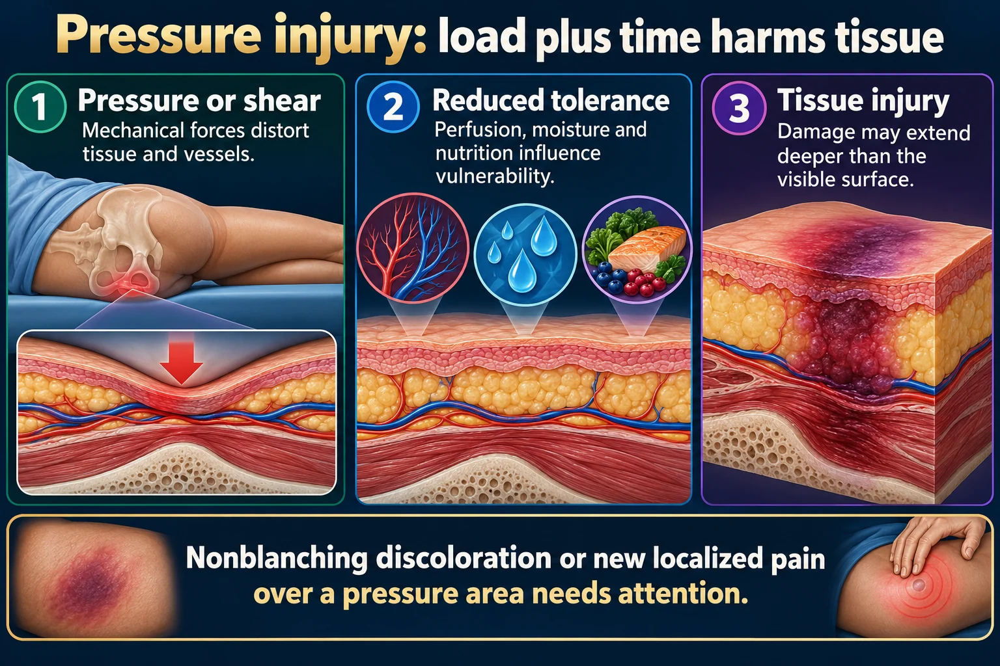

Pressure Injuries 🛏️
Staging 1 → 4 + unstageable + deep tissue — and the prevention that makes all of it unnecessary
A pressure injury is localized damage to skin and underlying soft tissue, usually over a bony prominence or under a medical device, caused by pressure — or pressure plus shear. Staging is nothing more than counting the layers you can see on the cross-section from NG-051. Learn that picture and staging answers itself.
📄 Simple Nursing original — opens in Drive →
Preview the Simple Nursing sheet here
WHY IT HAPPENS
STEP 1 · CAUSESquash a capillary long enough and the tissue it feeds dies. Everything else on this page follows from that one sentence.
🧨 The mechanism — a capillary crushed between bone and mattress

Nonblanching discoloration or new localized pain over a pressure area needs attention.
Read the picture
Pressure or shear
Mechanical forces distort tissue and vessels.
Reduced tolerance
Perfusion, moisture and nutrition influence vulnerability.
Tissue injury
Damage may extend deeper than the visible surface.
Prevent
Individualize repositioning, support surfaces, heel protection and moisture care.
Assess
Inspect pressure points and devices; compare with baseline across skin tones.
Stage accurately
Use the full depth and tissue findings; do not reverse-stage a healing injury.
Two variables decide the damage: how much pressure, and for how long. Very high pressure for a short time and modest pressure for a long time both kill tissue — which is why an immobile patient on an OR table, or a patient who slid down the bed and stayed there, can injure in hours.
🧨 Pressure vs shear vs friction vs moisture — four different enemies
Exam trap: moisture-associated skin damage (MASD / incontinence-associated dermatitis) is not a pressure injury and is not staged — it is diffuse, in the moisture pattern, often not over a bony prominence. The same is true of skin tears and tape injuries. Moisture multiplies pressure injury risk, but it is a separate diagnosis.
🚨 Where they come from — the two sources
- Bony prominence + surface — the classic. Sacrum/coccyx, heels, ischial tuberosities, trochanters, elbows, occiput, ears, scapulae, malleoli.
- Medical device — the fastest-growing category and the most missed. Oxygen tubing behind the ears and across the cheeks, nasal cannula, CPAP/BiPAP mask bridge of nose, ETT and tube holders, cervical collars, casts and splints, pulse-ox probes, SCD sleeves, catheter tubing left under a thigh, IV hubs, drain tubing.
A device-related injury takes the shape of the device. If the wound is a neat line or a mask outline, look for what was sitting there.
⚠️ Who gets them — the risk stack
Albumin reference 3.5–5.0 g/dL. Low albumin means poor protein status and edema, which widens the diffusion distance from capillary to cell — the tissue starves even with blood flowing.
STAGING — COUNT THE LAYERS
STEP 2 · THE BIG ONEThe single most tested content on this page. Same cross-section, six times, each one deeper.
🪜 The staging plate — one drawing per stage
⭐ Staging table — the version to memorize
| Stage | Skin intact? | What you see | Depth | Trap |
|---|---|---|---|---|
| Stage 1 | YES | Non-blanchable erythema over a bony prominence; may be firm, boggy, warmer/cooler, painful | Epidermis | In darker skin it may look purple/maroon or just different — palpate for temperature and induration |
| Stage 2 | NO — open | Shallow open ulcer, pink/red, moist, shiny wound bed; or an intact/ruptured serum-filled blister | Epidermis + partial dermis | No slough, no eschar, no fat. Do not use Stage 2 for skin tears, tape injury, incontinence rash or maceration |
| Stage 3 | NO | Full-thickness crater; fat may be visible; slough may be present; undermining/tunnelling common | Through dermis into subcutaneous | Depth varies by site — the ear, occiput, nose and malleolus have almost no fat, so a Stage 3 there can be shallow |
| Stage 4 | NO | Exposed or palpable muscle, tendon, fascia, ligament, cartilage or bone; slough/eschar may be present | All layers | Highest risk of osteomyelitis and sepsis |
| Unstageable | NO | Base obscured by slough (yellow/tan/gray/green, stringy) or eschar (tan/brown/black) | Full thickness — depth unknown | It becomes a Stage 3 or 4 only after debridement reveals the base |
| Deep tissue pressure injury | May be intact | Persistent non-blanchable deep red, maroon or purple discoloration, or a blood-filled blister | Damage begins at the bone–muscle interface | Not a bruise and not Stage 1. Can deteriorate to a full-thickness wound within days even with ideal care |
🚨 Eschar & slough — the two words that decide "unstageable"
- Eschar — black/brown, dry, leathery, dead tissue. Es-CHAR-coal = charcoal black.
- Slough — yellow/tan/gray, soft, moist, stringy dead tissue. Looks like the slippery skin of a raw chicken.
- Either one covering the wound base = UNSTAGEABLE until it is removed.
- Do NOT remove stable eschar on the heels — dry, adherent, intact, with no erythema or fluctuance. It is acting as the body's natural biological cover. Protect and offload it, and report any change (new redness, swelling, drainage, odor, softening) at once.
❌ Never reverse-stage
A pressure injury does not go back up the scale as it heals. Full-thickness wounds fill with granulation and scar tissue — they never regrow fat, muscle or dermis.
- A healing Stage 4 is documented as a "healing Stage 4" — never "now a Stage 2".
- Track healing with measurements (length × width × depth in cm), tissue type in the bed, exudate, and wound-edge condition — not by dropping the stage number.
- Once staged, the stage is the highest stage that wound ever reached.
📐 Measuring & documenting the wound — the clock method
RISK SCORE & PRESSURE POINTS
STEP 3 · FIND IT EARLYScore the risk, then know exactly where to look — the sites change with every position.
📍 Pressure points by position
📊 The Braden Scale — score the risk before the wound exists
Use the subscales, not just the total. A patient scoring low on moisture needs barrier cream and an incontinence plan; one scoring low on mobility needs a turning schedule and a support surface. Reassess on admission, with any change in condition, and per policy (commonly every 24–48 h in acute care).
⭐ Also monitor these numbers
- Albumin 3.5–5.0 g/dL — low = poor protein stores, edema, slow healing. (Prealbumin responds faster to changes in intake.)
- Urine output ≥ 30 mL/hr — below this signals inadequate perfusion/hydration, which starves the wound too.
- Fluids commonly 2–3 L/day unless fluid-restricted.
- Weight and intake — unintentional weight loss is a red flag for skin breakdown.
- Hemoglobin, glucose (A1c), and prealbumin — anemia, hyperglycemia and malnutrition all slow healing.
🚨 Signs the wound is now infected — escalate
- New or spreading erythema, warmth, edema around the wound; induration
- Purulent, thick or foul-smelling drainage; a sudden increase in exudate
- New or increased pain; friable, bleeding granulation; wound stops progressing or gets bigger
- Fever, chills, tachycardia, hypotension, confusion (especially the sudden confusion of an older adult) → think sepsis
- Exposed bone in a chronic wound → suspect osteomyelitis
PREVENT & TREAT
STEP 4 · CAREPrevention is the whole exam answer. Almost every "which action first?" question here is about offloading pressure.
🕑 Repositioning, the 30° rule, and floating heels
✅ The prevention bundle — do all of it, every shift
Full skin assessment on admission (within the first 24 h per most policies), Braden score, then reassess per policy and with any change.
Turn q2h in bed, q1h in a chair; 30° tilt; HOB ≤30°; float heels; lift sheet — never drag.
Pressure-redistributing mattress/overlay and a proper seat cushion for at-risk patients. No donut/ring cushions — they concentrate pressure in a circle and cause ischemia.
Clean promptly after incontinence, pat dry, apply a barrier cream/film; consider absorbent products; treat diarrhea.
Protein and calories, fluids 2–3 L/day unless restricted; dietitian referral for at-risk patients.
Rotate oximeter probes, pad tubing and mask edges, check ears/nose/neck/heels every shift.
❌ Never-do list
- Never massage a reddened bony prominence — it shears already-damaged capillaries.
- Never use a donut / ring cushion.
- Never drag a patient up the bed — friction plus shear. Use a lift sheet and two people or a mechanical lift.
- Never remove stable, dry, intact eschar from a heel without an order — it is a biological cover.
- Never reverse-stage a healing wound.
- Never leave the head of the bed high "for comfort" without checking the sacrum — that is the shear machine.
- Never assume a device is fine because the patient hasn't complained — sedated and neuropathic patients cannot tell you.
🩹 Treating what already exists — matched to the stage
| Stage | Goal | Typical approach |
|---|---|---|
| Stage 1 / DTPI | Protect and offload — nothing to fill | Remove all pressure from the site, transparent film or a soft silicone foam dressing for protection, treat moisture, reassess frequently. DTPI can still deteriorate — document and monitor closely. |
| Stage 2 | Keep it moist and covered, protect new epithelium | Hydrocolloid or thin foam dressing; keep the periwound dry; do not disturb an intact blister unnecessarily. |
| Stage 3 | Fill dead space, absorb exudate, remove dead tissue | Loosely pack with a moist filler (e.g. gauze or alginate depending on exudate) and cover; debride slough; measure undermining/tunnelling every dressing change. Pack loosely — tight packing causes more pressure. |
| Stage 4 | Same, plus protect exposed structures & find infection | Surgical/sharp debridement, advanced dressings, possible negative-pressure wound therapy, wound-care and surgical consult; watch for osteomyelitis and sepsis. |
| Unstageable | Reveal the base — unless it is stable heel eschar | Debridement (sharp/surgical, enzymatic, autolytic, mechanical) per order, then re-stage. Stable dry heel eschar: protect, offload, do not debride. |
The dressing logic, the healing phases, debridement types and the full documentation checklist live on the partner page: NG-080 — Wound Care.
👨👩👧 Teach the patient and family
- Why turning matters — "the skin needs its blood back every couple of hours."
- Check the skin daily, including with a mirror for the sacrum and heels at home.
- Report early: a red area that doesn't fade within about 30 minutes of relieving pressure, any new pain, or any open area.
- Eat the protein and drink the fluids; keep skin clean and dry.
- Wheelchair users: shift weight every 15 minutes, use a prescribed cushion, never a ring.
- Keep sheets wrinkle-free and crumb-free; avoid rough seams and plastic under-pads directly on skin.
🗺️ Where this page sits in the set
- NG-051 — Skin: the cross-section every stage on this page is drawn on, plus lesion vocabulary and the blanch test.
- NG-080 — Wound Care: the partner page. Healing intentions and phases, dressing selection, drains, dehiscence and evisceration.
- NG-116 — Frostbite: the same depth logic caused by cold rather than pressure.
THE STAGES, DRAWN TO DEPTH
PHOTO GUIDESix cross-sections through the same tissue layers, so you stage by how far down the damage goes.
🖼️ Pressure Injuries — recognize the depth